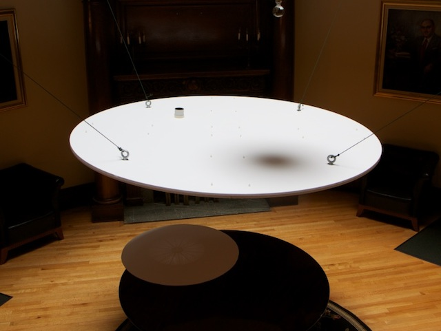
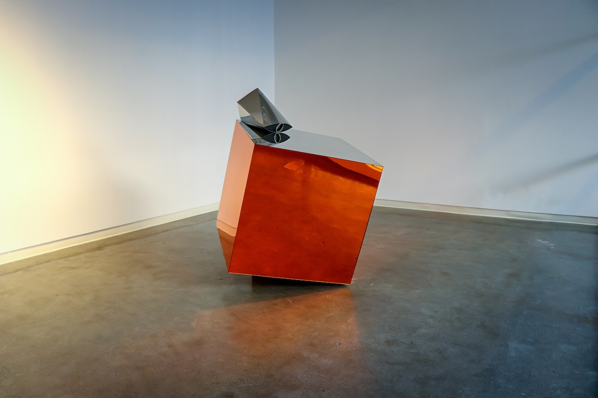
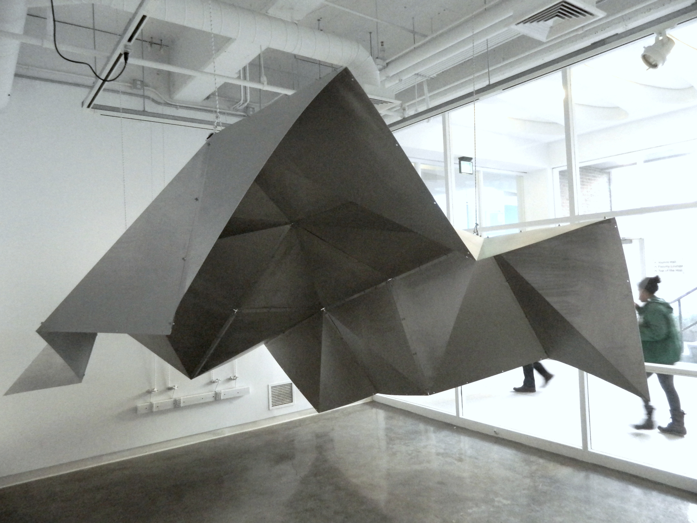
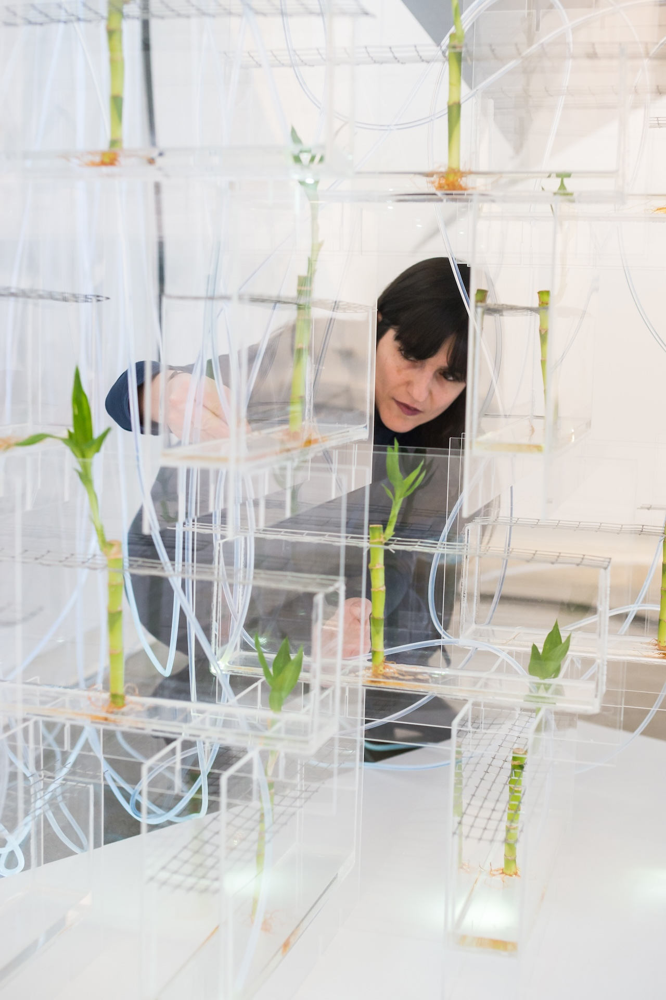
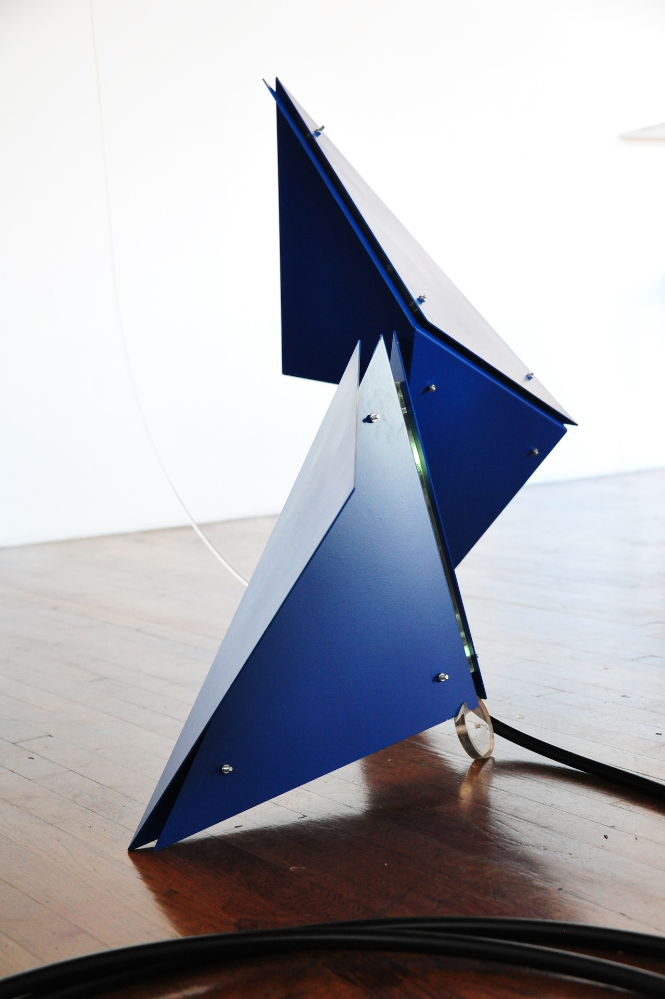
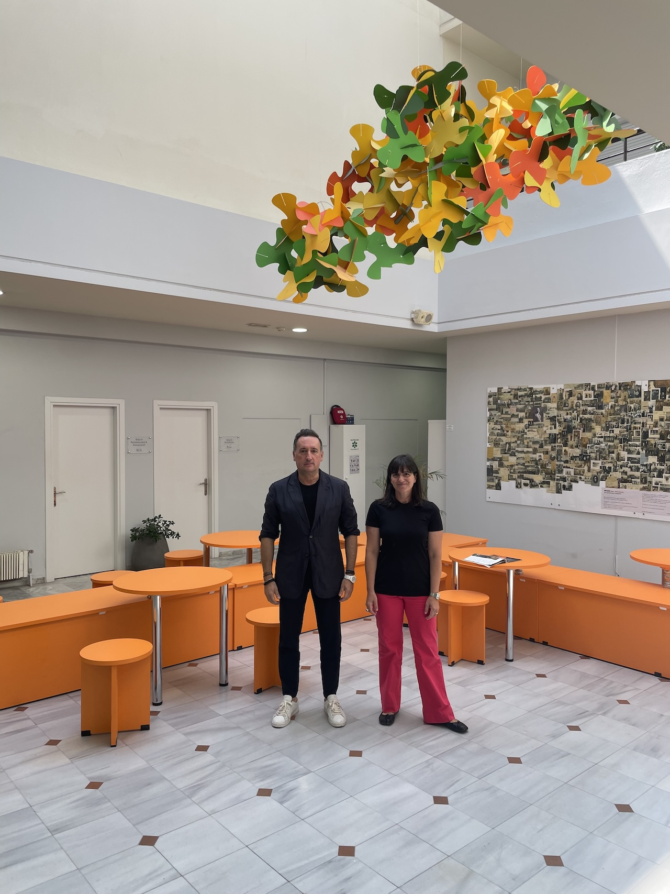
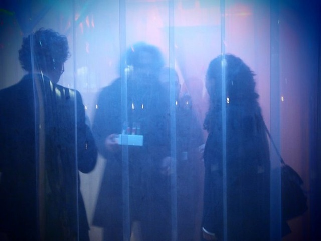
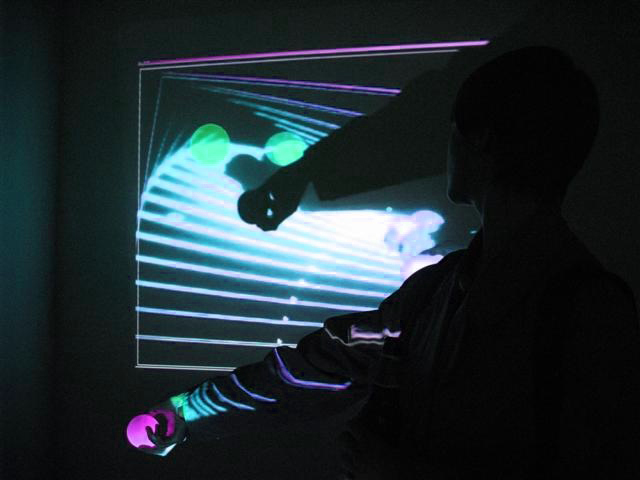
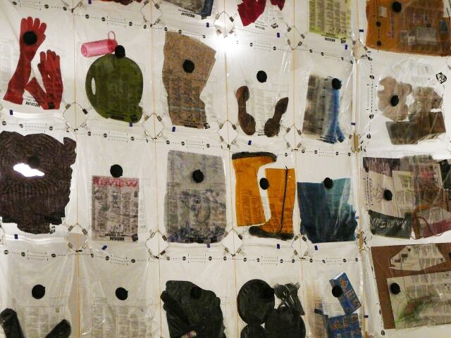

Architect · Artist · Scholar
Zenovia Toloudi
D.Des., Associate Professor of Architecture, Dartmouth College
Working between art and architecture, Zenovia creates installations and inhabitable spaces that explore light, color, materiality, scale, and the senses through play. Her research investigates subjectivity, perception, collective practices, public space, and vernacular forms of everyday life.
About
- Doctorate
- Harvard Graduate School of Design
- Fellowships
- Fulbright; St Gaudens Memorial; MIT Art, Culture & Technology
- Practice
- 35+ exhibitions & public installations
Zenovia Toloudi, D.Des., is an architect, artist, and scholar whose work sits at the intersection of art and architecture. It addresses the increasing disconnection of people from both natural and constructed environments, and from each other, and suggests alternatives to restore lost connections.
Zenovia merges artistic practice with architectural theory, producing site-specific installations that investigate the act of building and its relationship to lived experience. Her practice moves between the ephemeral and the permanent, exploring place, ecology, and the public realm. Working across Greece and the USA, she draws on a fascination with these contexts, where landscapes, cultural practices, and ways of making inform her work.
Research
Zenovia's research evolves around three axes, rooted in her doctoral research at Harvard's Graduate School of Design. Each has often been the subject of a solo exhibition.
Metamaquette
An exhibition-based methodology built around installations that explore cognition, perception, scale, the (im)materiality of light, subjectivity, and sensory experience.
Technoecologies
A visual framework for futuristic designs that reimagine the connection between people and nature — tangible approaches to bio-architecture and bio-art, relying not only on technology but on community rituals and vernacular elements of culture.
Technoutopias
A visual vocabulary examining architecture's role in physical environments to inspire civic identity, connecting formal elements and aesthetics with social purpose so that public space better fits the public.
Selected Projects
Understory Fold
Saint-Gaudens Memorial Museum, Cornish, NH
Yellow+Blue
Carleton University, Ottawa, Canada
Silo(e)scapes
Onassis Foundation, Athens, Greece / Le Lieu Unique, Nantes, France
Photodotes V: Cyborg Garden
Fenway, Boston, MA — with Spyros Ampanavos

Optotopia II: The Disc
New England College of Optometry, Boston, MA

Optotopia I: Polyphemus' Eye
New England College of Optometry, Boston, MA

Blanket III
Strauss Gallery, Hanover, NH / BAC, Boston, MA

Photodotes IV: Living Wall
as part of Photodotes (Light Donors) series with plants

Photodotes I
Brant Gallery, MassArt, Boston, MA

Micro-Ceasefire Under Shadow (series)
City Hall, Alexandroupolis, Greece

3 States of Hors-D'oeuvres
Harvard, Cambridge, MA — with Project on Spatial Sciences and Harvard Lab

Talking Room(s)
MIT Media Lab, Cambridge, MA — with Dimitris Papanikolaou

Mutant Moving Room
Podmajersky Gallery, Chicago, IL
Aegean Archipelago: An Aquatic Metacity
Venice Biennale, Italy
The Cage Pavilion
Thessaloniki, Greece — with M. Stefanidis, C. Lekka, G. Toloudis & C. Varotsos
Exhibitions & Collections
Venues
- Venice Biennale, Italy
- Le Lieu Unique, Nantes, France
- Center for Architecture, New York
- Boston Architectural College
- Athens Byzantine Museum
- Thessaloniki Biennale of Contemporary Art
- Onassis Cultural Center, Athens
- Saint-Gaudens Memorial, USA
Commissions
- Illuminus Boston
- The Lab at Harvard
Permanent Collections
- Aristotle University
- Thracian Pinacotheca
Publications
25+ articles & book chaptersPublished Chapters
- The Routledge Companion to Biology in Art and Architecture
- Technoetic Arts: Journal of Speculative Research
- MIT Press
- Palgrave/MacMillan
Catalogue
- Technoutopias — catalogue for the solo exhibition
Full List
Education
- D.Des. Harvard Graduate School of Design, USA
- M.Arch. College of Architecture, Illinois Institute of Technology, Chicago, USA
- Diploma of Architect Engineer School of Architecture, Faculty of Engineering, Aristotle University of Thessaloniki, Greece
- Erasmus Exchange Architecture, Faculty of Built Environment, Tampere University of Technology, Finland
Contact
- Email zenovia@gmail.com
- Instagram @ztoloudi